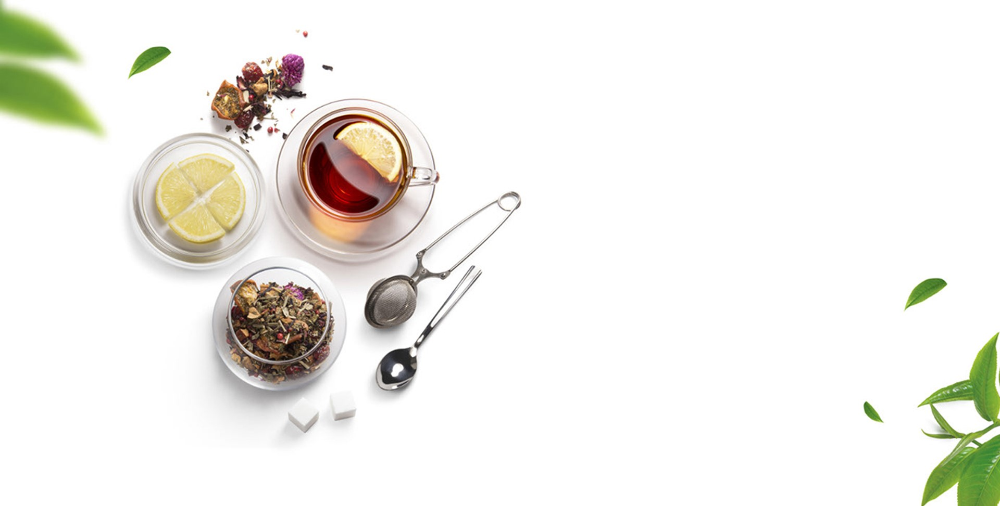

Văn hóa uống trà của người Việt, câu chuyện xưa và nay
Trà xanh Thái Nguyên được phổ biến là một thức uống dân dã, quen thuộc từ bao đời nay. Cây chè xuất hiện chủ yếu ở các tỉnh Thái Nguyên, Phú Thọ, Yên Bái, Lâm Đồng,... là nguồn gốc chè có chất lượng cao.
Tùy vào đặc trưng của từng vùng địa lý, khí hậu và cách chế biến khác nhau. Lá chè tươi sau khi được hái về, rửa sạch, vò nát rồi đun nước uống liền, người ta gọi đó là chè tươi. Còn những úp chè tươi được hái về, qua nhiều công đoạn chế biến như phơi, sấy, sao khô, ướp hương hoa... thì được gọi là trà. Trà có quy trình chế biến phức tạp, nhiều công đoạn, tốn công sức hơn nên giá thành cũng cao hơn chè tươi.

Theo ghi chép, trà là khởi nguồn ở các Chùa chiền, nơi gắn kết trà với đạo Phật. cũng bởi lý do đó, hình thức thưởng trà này được gọi là Thiền trà. Từ chùa chiền, hình thức thưởng trà nhanh chóng được ưa chuộng trong chốn cung đình. Thời ngày xưa, chỉ có những người thuộc tầng lớp vua quan, quý tộc, dòng dõi quyền quý mới được thưởng thức trà đạo hình thức cầu ký này, còn người dân thường chỉ uống loại chè tươi hái từ trên cây xuống.
Thời phong kiến qua đi, đến các cuộc chiến tranh đã trải qua bao nhiêu thăng trầm của lịch sử khiến cho thú chơi của ngày bình yên bị hạn chế. tuy nhiên, không vì thế mà văn hóa uống trà của người Việt bị mai một hay mất đi. Những nghệ nhân trà truyền thống tại Hà Nội cũng như nhiều vùng khác trên đất Việt vaanc gìn giữ niềm đam mê và bí quyết biên trà cho thế hệ sau này.
Văn hóa uống trà Thái Nguyên ngày nay:
Thời thế thay đổi, vì thế văn hóa uống trà của Người Việt cũng có sự thay đổi. Chè tươi bây giờ thường thấy có ở những hàng quán nước vỉa hè mà người ta hay gọi là chè tươi, trà đá, là những nơi dừng chân tạm thời, nơi danhf cho những câu chuyện ngày thường, đời thường của người trẻ, dành cho sự thảnh thơi, không vội vã.
Trà khô (trà mạn) cũng khác xưa nhiều, không phải chỉ dành cho những gia đình có điều kiện, am hiểu về trà xanh nữa mà đã được sử dụng rộng rãi, phổ biến hơn. Người ta thích trà mạn, yêu nghệ thuật thưởng trà nên nhiều người thường chú trọng vào ấm trà, cách pha trà và cả cách thưởng thức chúng. Sản phẩm cũng đa dạng chủng loại với nhiều hình thức sử dụng hơn.
BÀI VIẾT MỚI

Trà sen Tây Hồ - Thứ quà tặng giàu giá trị tinh thần của người Hà Thành
Trà sen Tây Hồ - Thứ quà tặng giàu giá trị tinh thần của người Hà Thành
Trà sen Tây Hồ - Thứ quà tặng giàu giá trị tinh thần của người Hà Thành
7-999-999-999
trasenbachdiep@gmail.com
Số 12. Quảng An, Tây Hồ, Hà Nội
Giới thiệu
Sản phẩm
Tin tức
Copyright © 2010 2020
Tra Sen Bach Diep. All rights reserved